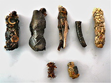

{kind=link}
{kind=link}
{kind=link}
Makrozoobenthos: Erfassung und Bewertung
{kind=link}

In einem Binnengewässer leben nicht nur Fische, sondern vor allem zahlreiche Wirbellose. Die mit bloßem Auge noch gut erkennbaren Tiere werden als „Makrozoobenthos“ bezeichnet. Zum Makrozoobenthos gehören hauptsächlich die Larven zahlreicher periodisch ans Süßwasser angepasster Insektengruppen (z.B. Wasserkäfer oder Libellen), dauerhaft im Wasser lebende Krebstiere (z.B. Bachflohkrebse) aber auch eher unscheinbare Taxa wie Egel, Kleinmuscheln, Wasserschnecken, Strudelwürmer und Wassermilben.
Diese Lebensgemeinschaft ist so arten- und individuenreich, dass Fließgewässer als Hotspots der Biodiversität gelten. Die Zusammensetzung der Lebensgemeinschaft wird allerdings durch zunehmende Umweltbelastungen wie Abwasser-, Nährstoff-, Schadstoff- und Feinsedimenteinträge sowie durch strukturelle Defizite (Gewässerausbau) und invasive Arten negativ beeinflusst. Es gibt nur wenige Ökosysteme und deren biologische Vielfalt, die unter den menschlichen Einflüssen so stark gelitten haben (und leiden) wie unsere Gewässer.
Durch die Erfassung des Makrozoobenthos können aussagekräftige Erkenntnisse über den Gewässerzustand (ökologischer Zustand nach EU-Wasserrahmenrichtlinie, Belastungen und strukturelle Veränderungen) gewonnen werden. Unter den wasserbewohnenden Insekten sind insbesondere die Eintagsfliegen (Ephemeroptera), Köcherfliegen (Trichoptera) und Steinfliegen (Plecoptera) von großer Bedeutung, da diese Gruppen hohe Ansprüche an ihren Lebensraum stellen. Sie sind somit Bioindikatoren (Zeigerorganismen) für saubere, sauerstoff- und strukturreiche Gewässer aber auch für den Zustand des gesamten Ökosystems.
Unsere Leistungen
- Erfassung und artenschutzfachliche Auswertung des Makrozoobenthos in Seen und Fließgewässern.
- Standardisierte Probenahme, Bestimmung der Organismen auf Artniveau und Bewertung des ökologischen Zustands von Fließgewässern gemäß EU-Wasserrahmenrichtlinie (Multi-Habitat-Sampling, Bewertungssystem PERLODES, Saprobienindex nach DIN 38410)
- Beurteilung des Einflusses von punktuellen Einleitungen, diffusen Einträgen und Schadensereignissen auf Fließgewässer.
Auswahl durchgeführter Arbeiten
Gewässerökologisches Gutachten - Einfluss des Kläranlagenablaufs und von Mischwasserbehandlungen auf die Vorfluter im Verbandsgebiet. AG: Abwasserzweckverband „Raum Offenburg“ (AZV), Elsässer Str. 1a, 77652 Offenburg (Bearb.: M. Pfeiffer, C. Günter, M. Haupt, M. Leschner, K.-O. Nagel & F. Zenker im Jahr 2025).
Gewässerökologische Schadensaufnahme im Schwarzbach im Zuge
eines Ölunfalls in Schwarzach am 03.09.2024. AG: Sigrid Scheinert, Hauptstraße
120, 74869 Schwarzach (Bearb.: M. Pfeiffer, M. Leschner & K.-O. Nagel im Jahr 2025).
Bewertung des Makrozoobenthos in Wehra im Zusammenhang mit der Sanierung des Wehrabeckens durch die Schluchseewerk AG (Bearb.: M. Mildner & M. Pfeiffer 2019 - 2022).
Artenschutzfachliche Bewertung Makrozoobenthos im Zuge von geplanten Renaturierungsmaßnahmen im Weißen Kocher in Oberkochen (Bearb.: M. Mildner & Michael Pfeiffer im Jahr 2020).
Beurteilung der Wasserqualität des Krebsenbächles bei Freiburg anhand des Makrozoobenthos und wasserchemischer Parameter zum Schutz und zur Förderung der dortigen Bachmuschelpopulation (Bearb.: M. Mildner im Jahr 2020).
Monitoring des Makrozoobenthos im Zuge der Entleerung und Wasserhaltung des Eggbergbeckens der Schluchseewerk AG (Bearb.: M. Mildner im Jahr 2020).
Bewertung der biologischen Wasserqualität (Saprobie) durch Makrozoobenthos zur Überprüfung der Einleitung der Kläranlage Lahr in den Schutterentlastungskanal. Auftraggeber BHM Planungsgesellschaft mbH, Bruchsal (Bearb.: M. Mildner und R. Behrendt im Jahr 2019).
Artenschutzfachliche Beurteilung der Limnofauna (Makrozoobenthos, Fische) der Dreisam für den geplanten Neubau des B 31 Stadttunnels Freiburg. BHM Planungsgesellschaft mbH, Bruchsal (Bearb.: M. Pfeiffer und Mitarbeiter 2019 und 2023).
Artenschutzfachliche Untersuchung der limnischen Tierarten (Makrozoobenthos, Fische/Rundmäuler, Muscheln, Flusskrebse) im Zuge des Ausbaus der A 98, Abschnitt 6. DEGES Deutsche Einheit Fernstraßenplanungs- und -bau GmbH, Berlin (Bearb.: M. Pfeiffer und Mitarbeiter im Jahr 2019).
Erhebung der Limnofauna (Makrozoobenthos, Fische/Rundmäuler, Flusskrebse) im Eberbächle im Hexental und Überprüfung der Steinkrebsvorkommen im Gebiet im Zuge der Planungen für ein Hochwasserrückhaltebecken. faktorgruen, Freiburg (Bearb.: M. Pfeiffer und Mitarbeiter im Jahr 2019).
Erfassung und artenschutzrechtliche Bewertung der Limnofauna (Makrozoobenthos, Großmuscheln, Fische/Neunaugen, Flusskrebse) des Dietenbachs im Zuge der Planungen eines neuen Stadtteils von Freiburg. faktorgruen, Freiburg (Bearb.: M. Pfeiffer, M. Mildner & C. Günter im Jahr 2018).
Erfassung und Beurteilung der aquatischen Fauna (Makrozoobenthos mit Saprobie, Fische/Neunaugen, Flusskrebse) im Bereich der zukünftigen Standorte für den Hochwasserschutz am Bohrerbach. Garten- und Tiefbauamt der Stadt Freiburg (Bearb.: M. Pfeiffer und Mitarbeiter (seit 2009).
Limnologisches Monitoring (Makrozoobenthos) des Egelsees (Österreich/Liechtenstein). Büro für Gewässerökologie, Langenargen (Bearb.: M. Pfeiffer und Mitarbeiter in den Jahren 2014/2016/2017).
Gewässerbiologische Beurteilung (Makrozoobenthos) von Sickerwasseraustritten aus einer Altablagerung auf ein kleines Fließgewässer (Endinger Vorflutgraben am Kaiserstuhl). Simonsen Lill Consult, Freiburg (Bearb.: M. Pfeiffer im Jahr 2006).
Pfeiffer, M. (2008): Fauna der Fließgewässer des Mooswalds. S. 237-259. In: Körner, H. (Hrsg.): Die Mooswälder – Natur- und Kulturgeschichte der Breisgauer Bucht. Freiburg i.Br.: Lavori (zugl.: Mitteilungen des Badischen Landesvereins für Naturkunde und Naturschutz ; N.F. Bd. 20, H. 2 u. 3 (2008/2009).